Group chats
Stop burying photos under new messages
When photos are posted one by one, they disappear under replies, reminders, and unrelated chatter. A pinned link gives the group one stable place to open the set.

Community groups do not need another messy thread of attachments. Put the useful photos into one focused share, pin the link, show the QR code when people meet in person, and close access when the cycle ends.
Instead of reposting files, give members one link they can open later.
Paste the link in the group chat, or display the QR code on a poster or notice board.
Use an expiry or revoke the share after the event, class, or season is over.
Use only the photos members actually need: event highlights, class activity shots, club announcements, or a small project batch.
Generate one link and one QR code from the same share. Pin the link, or put the QR code where people already look.
Set a view limit or expiry before sending, then revoke the share when that event or group cycle is finished.
When photos are posted one by one, they disappear under replies, reminders, and unrelated chatter. A pinned link gives the group one stable place to open the set.

For a class, club meeting, volunteer event, or local notice board, the QR code is easier than typing a link. People scan once and open the same share.
Group photos are often useful for a short window: after an event, during sign-up, or while parents and members are checking a set. Add an expiry so the link has a natural ending.

Upload a focused photo set, get one link and one QR code, pin it where members can find it, and close access when the moment is over.
Try MaiIMG